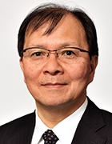

Program
4-Oct-23
- 9:00
Registration
- 9:50-10:00
Opening Remarks
- Hiroyuki Aburatani
- 10:00-12:00
Session 1 T2T
Chairs:
- Shinichi Morishita
(The University of Tokyo)

- Yosuke Tanigawa
(MIT)
- 10:00-10:40
-

- Evan Eichler (University of Washington)
- 10:40-11:10
-
- Shinichi Morishita (The University of Tokyo)
- 11:10-11:40
-
- Heng Li (Dana-Farber Cancer Institute & Harvard Medical School)
- 11:40-12:00
-
- Wojciech Makalowski (University of Muenster)
- 12:00-13:00
-
Lunch & Poster Session
Luncheon Seminar (Twist Bioscience)
Meet the Expert)
- 13:00-14:00
Keynote
- Chair: Hiroyuki Aburatani (The University of Tokyo)
Creating the Fourth Chapter of Human Genomics

- Eric Green (NHGRI)
- 14:00-15:00
Round Table (20th Anniversary of Human Genome Sequencing）
Moderators:- Hiroyuki Aburatani
(The University of Tokyo)
- Man Miyata
- Eric Green (NHGRI)
- Evan Eichler
(University of Washington)
- Sue Hill (NHS England)
- 
- Hitoshi Nakagama (NCC)
- Hiroyuki Aburatani
- 15:00-16:00
Coffee Break & Poster Session
- 16:00-17:30
Technology Presentation
- Moderator: Yutaka Suzuki (The University of Tokyo)
- 16:00-16:30
-
- PacBio
- 16:30-17:00
-
- 10x Genomics
- 17:00-17:30
-
- MGI
- 17:30-19:00
Session 2: Single Cell & Spatial Biology
- Chair: Shumpei Ishikawa (The University of Tokyo)
- 17:30-18:00
-

- Joakim Lundeberg (KTH Royal Institute)
- 18:00-18:30
-
- Holger Heyn (CNAG-CRG)
- 18:30-19:00
-

- Joseph Beechem (NanoString Technologies, Inc.)
5-Oct-23
- 9:30-12:00
Session 3: Disease Genome 1
- Chair: Tatsuhiro Shibata (The University of Tokyo)
- 9:30-10:00
-

- Mamiko Sakata (University of Tsukuba)
- 10:00-10:30
-

- Ankur Sharma (Harry Perkins Institute of Medical Research)
- 10:30-11:00
-

- Yuichi Shiraishi (NCC)
- 11:00-11:30
-
- Yosuke Tanigawa (MIT)
- 11:30-12:00
-

- Linghua Wang (MD Anderson Cancer Center)
- 12:00-13:00
-
Lunch & Poster Session
Luncheon Seminar (KONICA MINOLTA)
Meet the Expert
- 13:00-15:30
Technology Presentation
- Moderator: Naoto Kondo (RIKEN GENESIS CO., LTD)
- 13:00-13:30
-
- Agilent Technologies Japan, Ltd.
- 13:30-14:00
-
- Vizgen Inc.
- 14:00-14:30
-
- Illumina, Inc.
-
- Moderator: Ayako Suzuki (The University of Tokyo)
- 14:30-15:00
-
- Olink
- 15:00-15:30
-
- Biostream
- 15:30-17:10
Session 4: Genome Medicine
Chairs:- Naomichi Matsumoto
(Yokohama City University)
- Toru Masui
(Aoyama Gakuin University)
- Naomichi Matsumoto
- 15:30-16:10
-
- Sue Hill (NHS England)
- 16:10-16:40
-

- Heidi Beate Bentzen (University of Oslo)
- 16:40-17:10
-
- Takashi Kohno (NCC)
- 17:10-18:00
Round Table (Data sharing)
- Moderator: Masanori Arita (NIG)
- Sue Hill (NHS England)
- Takashi Kohno (NCC)
- Evan Eichler
(University of Washington)
- Heidi Beate Bentzen
(University of Oslo)
- 18:00-20:00
Networking & Poster Discussion
6-Oct-23
- 9:30-11:00
Session 5: Disease Genome 2
Chairs:
- Yukinori Okada
(Osaka University)
- Yosuke Tanigawa
(MIT)
- 9:30-10:00
-
- Seishi Ogawa (Kyoto University)
- 10:00-10:30
-
- Andrea Ganna (FinnGen)
- 10:30-11:00
-
- Yukinori Okada (Osaka University)
- 11:00-12:00
Short Talk
Chairs:- Yukinori Okada
(Osaka University)
- Yosuke Tanigawa
(MIT)
- 12:00-13:00
-
Lunch & Poster Session
Luncheon Seminar (Genesis Healthcare)
Meet the Expert
- 13:00-15:00
Emerging Technology Presentation
Platform for Advanced Genome Sience Presents
-
Moderators:
- Ken Kurokawa
(National Institute of Genetics)

- Yutaka Suzuki
(The Uneversity of Tokyo)
- Ken Kurokawa
- 13:00-13:30
-

- Kamila Belhocine (10x Genomics)
- 13:30-14:00
-
- Gary Schroth (Illumina, Inc.)
- 14:00-14:30
-
- Ying Gu (BGI)
- 14:30-14:50
-
- Steve Glavas (Pixelgen)
- 14:50-15:40
Coffee Break & Poster Session
- 15:40-15:50
Award
- 15:50-17:50
Session 6: Chromatin Regulation
- Chair: Linghua Wang (The University of Texas MD Anderson Cancer Center)
- 15:50-16:20
-
- Denes Hnisz (Max Planck)
- 16:20-16:50
-
- Yasuyuki Ohkawa (Kyushu University)
- 16:50-17:20
-
- Thomas Gingeras (Cold Spring Harbor Laboratory)
- 17:20-17:50
-

- Ariel Gershman (Johns Hopkins University)
- 17:50-18:00
Closing Remarks